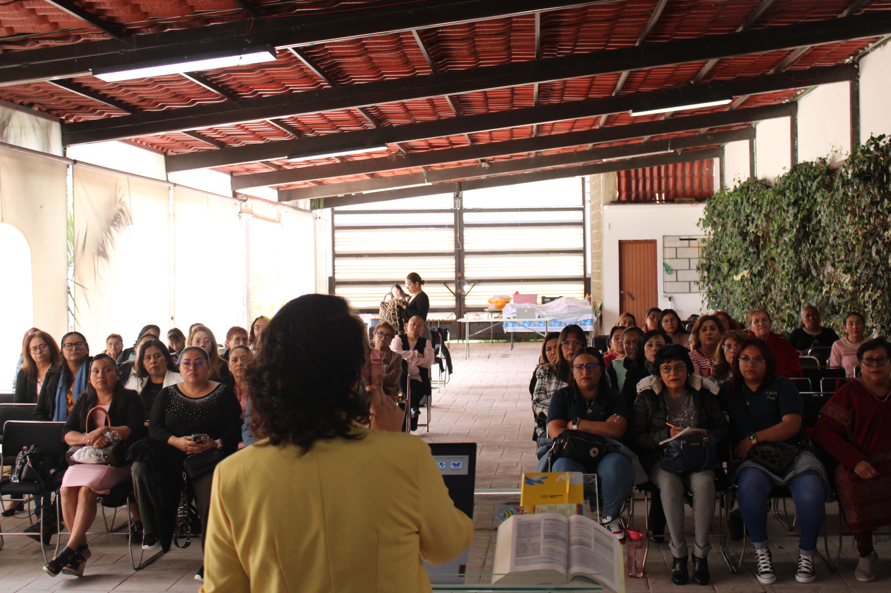
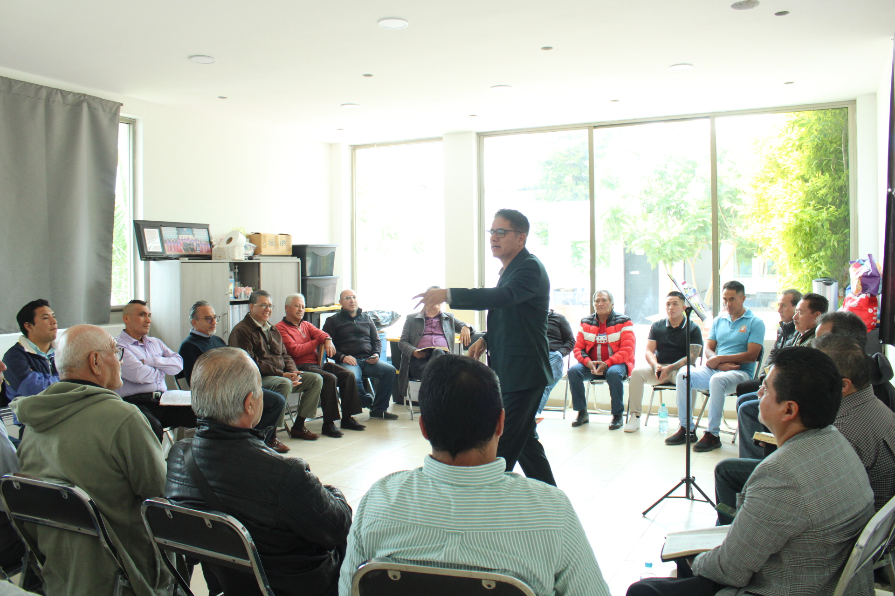
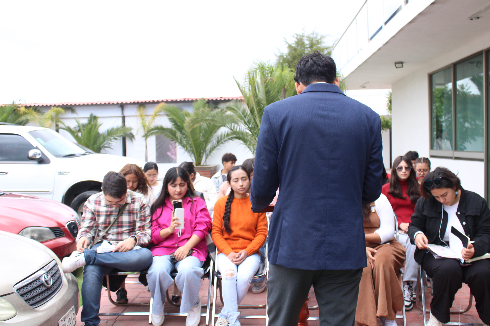
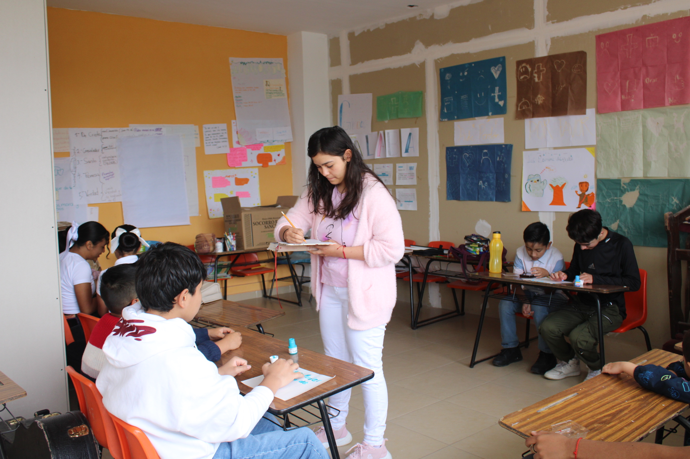
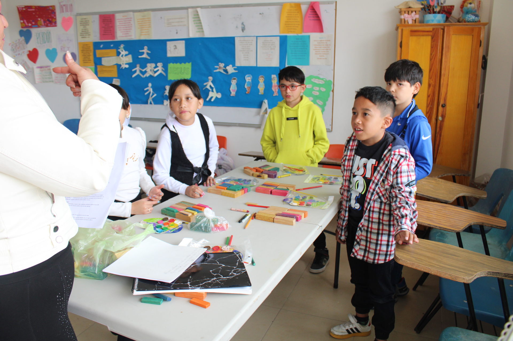
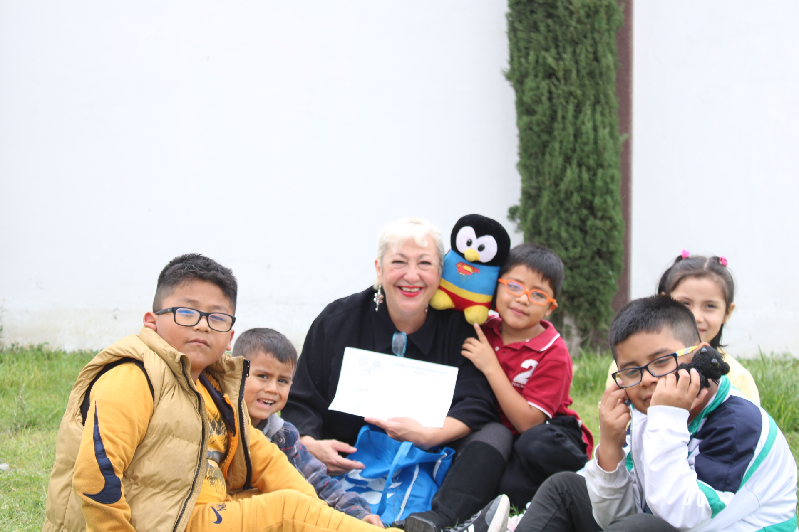

Tu navegador no soporta el video.
Casa de reyes y sacerdotes
Un lugar donde el amor une las familias

Departamento de Mujeres:

Departamentos de Caballeros:

Departamento de Jovenes:

Salon de nuestros Preadolecentes:

Salon de nuestros niños:

Salon de nuestros mas pequeños:
⬅️
➡️
×